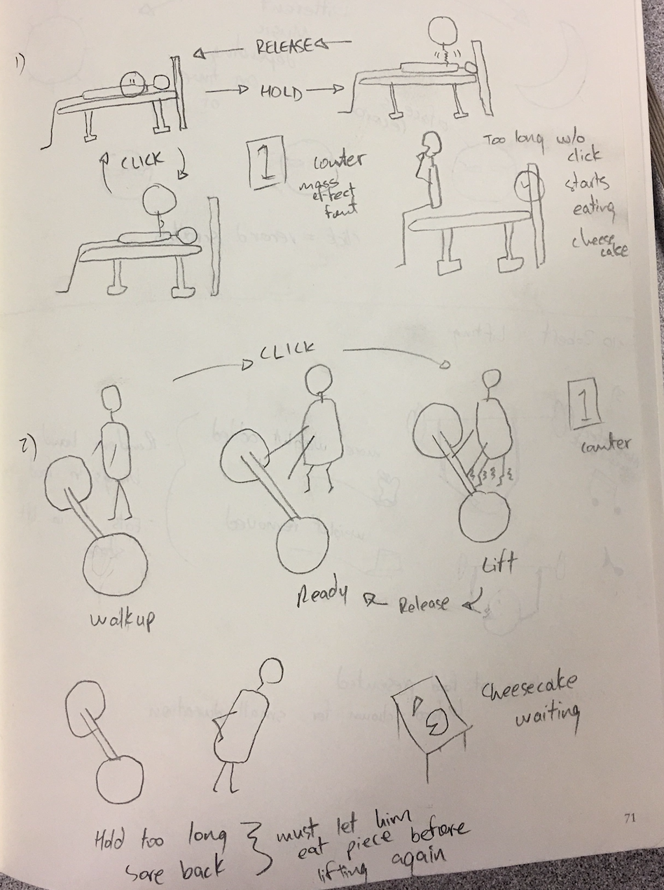

The <Joe> Button
In this project, I will design, implement and
document via this web portfolio a software application where
central interaction is with a button, which represents some
aspects of my client's personality or character.
As a group of five, we initially decided to interview our classmates separately, and then
collect our ideas and use a celebrity as our client. After finishing ten sketches, comparing
and discussing, we decided to create a button that represents our classmate Robert.
The Interview Phase
I have interviewed my classmate Jacky. Some facts of him are listed in below.
- He wears glasses.
- He plays video games.
- He loves palying Overwatch.
- He palys acoustic guitar.
- He is a night owl.
- He likes listening to music.
- He is a computer science student.
- He is taking the HCI course.
When I started sketching, I realized that I should have asked more questions to complete the details. As my group is going to use a celebrity as our client, I listed in below some questions that I found helpful to define a person's traits for the design of the button.
- What is your favorite color?
- What is your favorite video game?
- What is your favorite song?
- At what time of the day do you usually play games/the guitar?
- With whom do you paly games with?
- And so on ...
My Sketches
Here are some of my original designs.

Refinement Sketches
After gathering all of our ideas, we decided to use Robert, one of our classmates who loves weightlifting, as our client. We had several ideation iterations to finalize our 10 refinement sketches.
| Sketches | Description |
|---|---|
| Refinement sketch 1&2, from Jason. Power meter window and cheesecake as the reward. We chose to use green and blue as our color theme because these are Robert's favorate colors. And Robert also likes cheesecakes. | |
 |
Refinement sketch 3, from Jason. There is a progress bar surrounding the app. Every time we press the button, Robert pushes the lifter and the progress bar would change color. |
| Refinement sketch 4&5, from Karn. Robert's favourite motivation music is "Suicide Mission". So we use it as our background music. He likes Apple and cheesecake, so we consider to use eatable apple and cheesecake as periodic motivation. | |
|  | Refinement sketch 6&7, from Karn. Karn sketched the workout cycle and the button interactions, together with an arm-shaking effect. |
| Refinement sketch 8, from Cole. Cole has designed the noodle man, which we used in our final implementation. | |
| Refinement sketch 9&10, from me. I added red-face and sweating effects. In the second half of the cycle, Robert's face will turn red and starts sweating. |
Source Code
Please use Visual Studio to build and run the project. Or you can run the executable in the folder.
Download